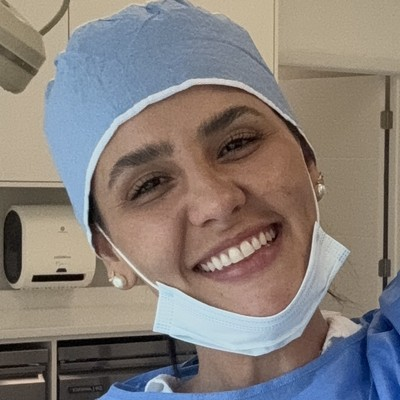

“Tem vaso nesse ponto?”Se você pensa isso com a seringa na mão, a paciente percebe.
O curso online de dissecção da Dra. Aline Filgueiras: a face por dentro, camada por camada. Sem visto e sem passagem.
Na Filgueiras Academy você aprende a Consulta que Vende e leva as ferramentas prontas: anamnese, termos e precificação.

Dra. Aline Filgueiras11+ anos de clínicaVocê postou, fez promoção, baixou o preço.
2 de 30 horários preenchidos
A paciente não vê o seu certificado. Ela sente se você sabe o que está fazendo. Na Filgueiras Academy: anatomia em fresh frozen, mais de 70 aulas de técnica e a Consulta que Vende.